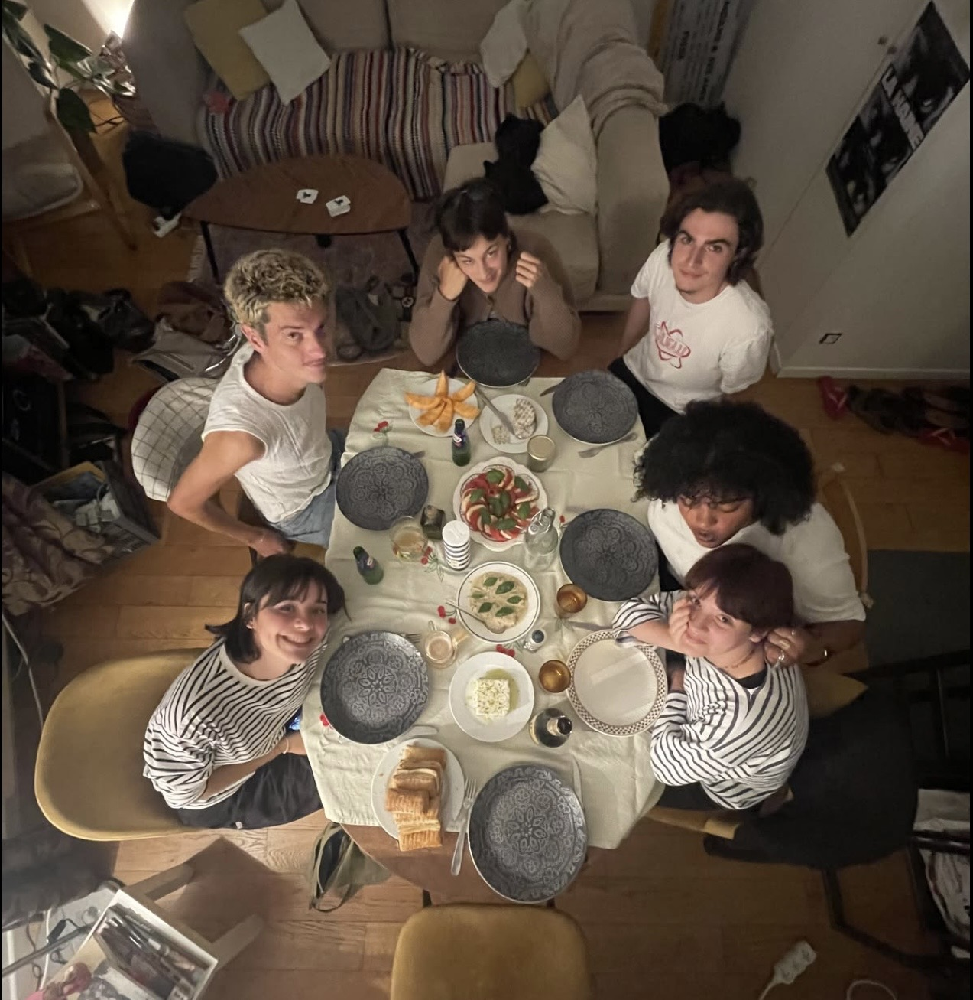

About Me
How I Got Started
I grew up watching the people around me cook, and that is where my love for food began. Over time it turned into something I wanted to do for a living, and now I work as a private chef.
I like cooking for small groups because it lets me focus on every plate and get to know the people I am cooking for. Making food that someone enjoys is what keeps me going.
My Skills and Interests
- Private cooking and meal preparation
- Food photography and presentation
- Learning about different cuisines and cultures
- Menu planning and recipe development
My Resume
Click below to view my resume.
Download My ResumeA Little More About Me
